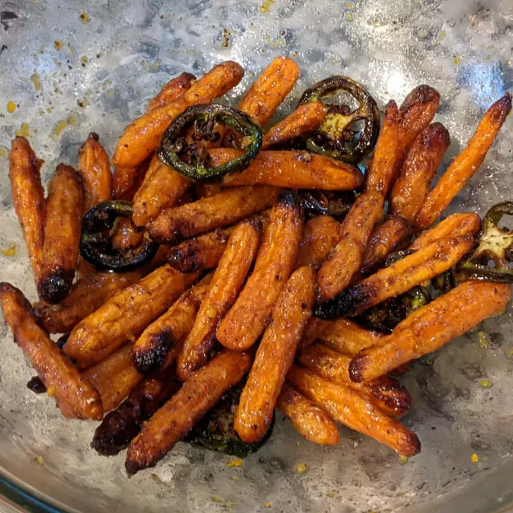

Sweet and Spicy Roasted Carrots

Description
These tender and roasted carrots cooked in the air fryer can be on your table in less than half an hour. Tossed in a honey-butter sauce and sprinkled with your choice of fresh basil, chives, or just salt and pepper.
Ingredients
- 1 serving cooking spray
- 1 tbsp butter, melted
- 1 tbsp hot honey
- 1 tsp grated orange zest
- 1/2 tsp ground cardamom
- 1/2 pound baby carrots
- 1 tbsp freshly squeezed orange juice
- Salt and pepper to taste
Steps
- Preheat an air fryer to 400 degrees F (200 degrees C). Spray the basket with nonstick cooking spray.
- Combine butter, honey, orange zest, and cardamom in a bowl. Remove 1 tablespoon of the sauce to a separate bowl and set aside. Add carrots to the remaining sauce and toss until all are well coated. Transfer carrots to the air fryer basket.
- Air fry until carrots are roasted and fork tender, tossing every 7 minutes, for 15 to 22 minutes. Mix orange juice with reserved honey-butter sauce. Toss with carrots until well combined. Season with salt and pepper.